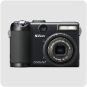
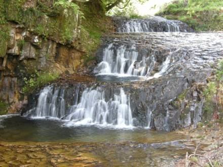

私のお気に入り
デジタルカメラ ニコン COOLPIX P5100
2007年のクリスマス前に、年賀状を印刷していたらプリンターのインクが無くなったので、家電量販店に買いに行き、何の気なしにデジカメのコーナーに寄ってみたら目に付いたのがこのカメラである。

手に取ると、大きなグリップがしっくりと馴染み、ホールディング性が素晴らしい。見た目も全体的にカメラカメラしていて、懐かしい感じがする。思わず衝動買いしそうになったけれども、そこはじっとがまんして、カタログをもらって家へ帰ってじっくり検討してみた。カタログの中にあった写真で、シャッタースピードを遅くして、渓流の水がなめらかに連なって写っているのがあった。昔からこういう写真を撮りたいなぁと思っていたので、マニュアル、絞り優先、シャッタースピード優先などの撮影ができるという機能が気に入った。問題は、大きさがフィッシングベストの胸のポケットに入るかどうかということだけだったが、店頭で見た限りでは入りそうだったので、えいやっと買うことにした。
いよいよ買うことが決まったので、近くの店を何軒か回ったり、ネットで調べたりして、結局、キタムラの通販で購入した。
買ってみて気に入ったのは、やはりボディの持ち易さ、ベストの胸のポケットにすっぽり入る手頃な大きさ、黒色艶消しのボディ色、豊富な撮影モード、光学ファインダーがある点、メニューの分かり易さ、動画が撮れることなどである。液晶画面は十分大きいが、大きすぎて周辺のボタンの位置を圧迫して操作性が失われていることは無い。
ボディの色が艶消しの黒色ということにはちょっとしたこだわりがあって、フライリールもそうなのだが、太陽の光を反射することが少ないので、ニュージーランドのシビアなサイトフィッシングのシチュエーションにおいいて、魚を脅かす可能性が低くなる利点があると思う。まぁ、それほど神経質になることもないのであるが。
肝心の画質であるが、あまり大きなサイズをプリントすることが無いので、語るほどのこだわりはなく、十分満足している。仕様の点で欲を言えば、広角が28mmまであったら良かったのにということと、バッテリーが汎用性のある単三サイズ対応だったらという点だけである。もっともこれを言うと、同じクールピクスのP60にしておけば良いという話になってしまうが。
実家に帰った時に、昔よく釣りに行った地元の川の滝を写してみた。出来る限りシャッタースピードを遅くしたのだが、ちょっとは雰囲気のある滝のように写せたかなと思っている。

釣りに持って行くカメラとしては、いかに画質が優れていても、一眼レフほど大きく、重いカメラはどうしても持っていく気になれないので、手頃な大きさで、機能が豊富なこのカメラはとてもお気に入りである。もっとも釣りの現場では、オート撮影でパチパチと撮りまくるので、あまり凝った写真は写さないのであるが。
などと書いていたら、もうすでに2008年の9月末時点で、生産が終わっているらしい。モデルチェンジのペースが早いので、定番の商品などというものは、デジカメの世界にはどうやら無いらしい。
バッテリーの充電器に接続する電源コードも、ニュージーランド・オーストラリアで使えるオプション品を購入したので、いつかかの国を再訪するチャンスがあれば、しっかり活用したいと思っている。
私のお気に入り 目次へ
サイトマップ
ホームへ
お問い合わせ